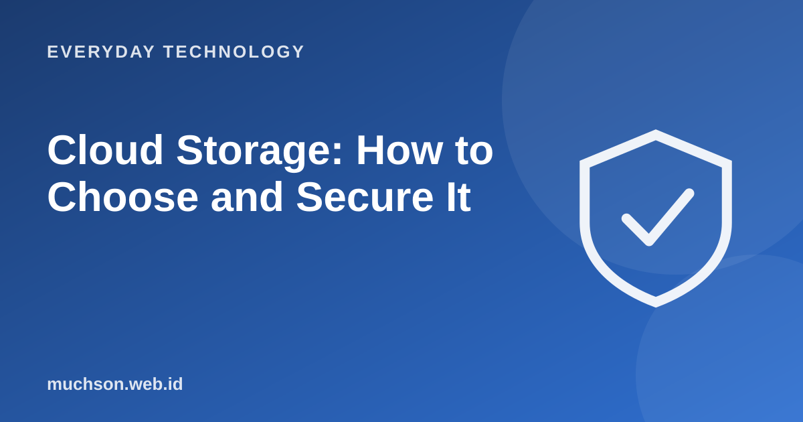

Home › Articles › Everyday Technology
Everyday TechnologyCloud Storage: How to Choose and Secure It
Storing files in the cloud means keeping them on a service provider's servers instead of on your device. It is handy for access from anywhere and as a backup, but there are things you need to set up to stay safe.

How it works in brief
Text description of the diagram
- Upload a file: from your phone or laptop
- Stored on a server: the provider, encrypted
- Synced: to your other devices
- Shared: by link or account permission
What to consider when choosing
| Consideration | What to ask |
|---|---|
| Free space and price | How much is free, and what do paid plans cost? |
| Ecosystem | Does it suit the devices and apps you use (Android, iPhone, Windows)? |
| Collaboration | Can you share and edit together? |
| Security | Two-step verification, version history, encryption? |
| Privacy | What is the policy on storing and using your data? |
| Ease of leaving | Is it easy to download all your data if you move to another service? |
Security settings
Remember
Syncing is not a full backup. If a file is deleted on one device, it can be deleted on all of them. Use version history and keep one copy somewhere else for important data.
FAQ
Are files in the cloud encrypted?
They are usually encrypted in transit and at rest, but the provider normally holds the keys. For very sensitive data, encrypt it yourself before uploading.
What happens if my account is closed?
You may lose access to your files. That is why you should keep a copy elsewhere and protect your account.
Should I pay for a subscription?
If the free space is not enough and you use it regularly as a backup, a paid plan makes sense.